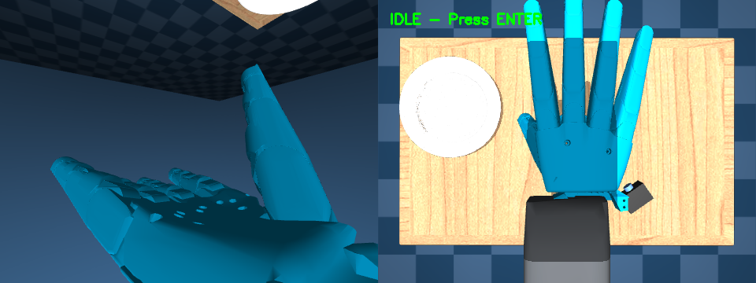
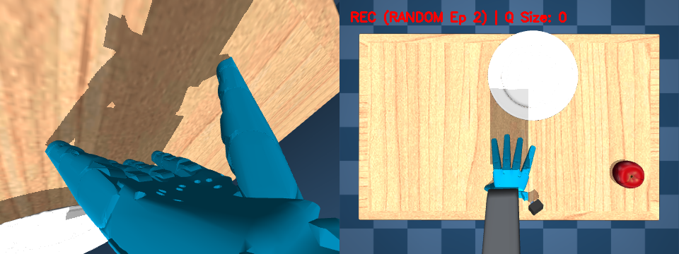

The MABEL stack is four layers behind one interface: a single ROS 2 graph that wraps every bus
behind standard topics, a MuJoCo digital twin that runs the same control code as
the robot, a bench-calibration pipeline that hands the twin and the controllers the
friction, inertia, and mass numbers CAD never gives you, and a Mac-resident teleop server that lets
a Vision Pro, an iPhone, or a browser drive sim or hardware over one contract. Flip one flag to
choose the world.
ROS 2 HumbleMuJoCo · 500 HzSystem-ID · R² 0.9998JSON in · MJPEG outsim ⇄ real, one flag
L2 · The ROS 2 graph
Commands in, state out.
A single ROS 2 Humble workspace — mabel_ws — wraps every firmware bus behind
standard topics. Teleop and autonomy publish onto the command bus; the actuator drivers and sensor
nodes publish back /joint_states, /odom, the camera images, and the LiDAR
scan. Boot the twin and one mabel_mujoco_sim node stands in for all of them — consumers
never touch CAN or RS-485; they see topics.
Hover any node or bus for what it does — or tap on touch.
One launch file
Two ways to boot.
mabel_bringup/robot.launch.py takes a single use_sim argument —
the real robot is a federation of driver nodes; the sim is one monolithic node. The graph above is
identical either way.
ros2 launch mabel_bringup robot.launch.py
A
A federated robot
Brings up base.launch.py, body.launch.py, arms.launch.py
and sensors.launch.py as independent nodes — each owns one firmware bus and can
be restarted alone.
B
Real buses, hidden
mabel_swerve_node (REV CAN), arms/body_hardware_node (Damiao CAN),
orca_hand_node (Feetech) each publish /joint_states at 200 Hz.
One mabel_mujoco_sim node replaces every driver — it owns physics, publishes the
same /joint_states, and listens on the same command topics.
B
Nothing else changes
Teleop, WBC, and Nav2 can't tell the difference — same topics, same types. Validate in sim,
drop the flag, deploy. See Simulation below.
The contract
What's on the wire.
A handful of topics is the entire interface between control and hardware. The base and
lift even share one custom message — twist plus lift height plus a state byte.
Topic
Type
Dir
/mabel_cmd
mabel_interfaces/MabelSwerveCmd
sub
/arms/command
arm joint command
sub
/body/command
torso + neck command
sub
/left_hand · /right_hand/command
17-DOF hand command
sub
/joint_states
sensor_msgs/JointState
pub
/odom
nav_msgs/Odometry
pub
mabel_interfaces · the base+lift message
One twist drives the floor.
The swerve base and the lift ride a single custom message — a body-frame twist, the target lift
height, and a hardware-state byte. The driver runs the swerve IK and the tip-safe envelope below
it; you just send where you want to go.
Damiao-CAN driver nodes for the 14-DOF arms and the torso + neck.
04
mabel_orca_hand
orca_hand_node + a joint-state relay for both 17-DOF Feetech hands.
05
mabel_sensors
camera_bridge: head RGB-D, dual wrist cams, and the base 2-D LiDAR on one clock.
06
description · interfaces · sim
The shared URDF, the custom messages, and the MuJoCo node — one kinematic tree, sim and real.
L3 · Simulation
It works in sim first.
A MuJoCo digital twin built from the same URDF as the real robot — dropped into a
furnished home. The swerve base, the Z-lift, and the bimanual whole-body controllers all run the
same controller/mabel code we ship to hardware. Every clip below is real
physics, stepped at 500 Hz — not an animation.
Holonomic navigation · furnished home · MuJoCo
MuJoCo 3.5500 Hz · implicitfastShared URDFReal control code
Controllers
The control stack, on tape.
The swerve base, the lift, the hands, and the whole-body arm solver — each a module in
controller/mabel, driving the twin under the same tip-over / fall envelope the keyboard
teleop uses.
swerve.py · strafe → strafe → spin-in-place
Holonomic base · swerve.py
Three modules, any direction.
A 3-module delta swerve maps a body twist (vx, vy, ω) to per-module
steer angle and wheel speed. Two tricks keep it from scrubbing: shortest-path steering
(flip and drive backward rather than sweep past ±90°) and a cosine anti-slip choke
that kills drive power until the column catches up.
0.8 m/s lin2.0 rad/s angShortest-path steerAnti-slip choke
cascaded Z-lift · 0 → 0.635 m + torso pitch
Z-lift & torso
Eye height on demand.
A cascaded lift gives 0.635 m of vertical travel; a pitching torso adds
reach low. Raising the lift raises the CoM — h = 0.443 + 0.432·z — so a direction-aware
tip-over model shrinks the safe speed and braking limits as ~1/h
(atip = g·d / h): forward braking conservative, lateral reversals agile.
0.635 m travelZMP tip-safeCoM-aware limits
ORCA hand · open → close → open
Dexterous hands
Seventeen joints per side.
Each hand is an open-source ORCA hand — five fingers, tendon-routed, with
abduction, MCP, and PIP joints modelled per finger. The same position commands drive the
simulated and real hand, so grasps tuned here transfer straight across.
5 fingersTendon-routedOpen-source ORCA
wbc.py · 18-DOF bimanual DLS IK
Whole-body IK · wbc.py
Both hands, one solve.
The upper body is an 18-DOF chain — lift + torso + 7-DOF arm + wrist per side — solved as one
weighted damped-least-squares problem tracking both 6-DOF palm targets at once. A
null-space posture task keeps a natural configuration, and weighting makes the
lift and torso "lazy" so the arms lead. More on the controller →
18 DOFWeighted DLSNull-space postureLazy base follow
On-board sensors
What MABEL sees.
Every camera on the robot is modelled in the twin. As it drives, the full suite streams
at once — head stereo, both wrists, the body cam, and the base front/back views — the exact feeds
the policies and teleop see.
Live on-board camera suite · driving through the home
Head ZED stereoL / R wrist camsBody camBase D435 front / back360° LiDAR
Sim-to-real
One model, two worlds.
The gap is closed by construction: the twin and the robot share geometry, share
interfaces, and the controllers don't know which one they're talking to.
01
Single source of geometry
One URDF generates the MuJoCo MJCF, the on-robot kinematics, and the web's 3D viewer. Module
positions, wheel radius, and lift limits read from the same config — sim and hardware can't
silently diverge.
02
The same controller code
Swerve IK, whole-body IK, the lazy base, and the tip-over safety all live in
controller/mabel. The simulator imports them unmodified; deployment swaps the
MuJoCo plant for the real CAN / RS-485 bus, not the math.
03
Tip-safety from measured geometry
The support triangle and CoM projection in the ZMP limiter are measured from the model. The robot
inherits the same envelope, so "safe in sim" means safe on the floor.
04
Built for data
The furnished home is where teleoperated demonstrations get collected and replayed. Small
embodiment gap, real graspable objects, identical interfaces — the twin is the front door to the
learning pipeline.
Calibration · system identification
The numbers CAD won't give you.
A CAD model hands you geometry, not physics. The controllers and the MuJoCo twin still
need the messy real quantities — joint friction, reflected rotor inertia, true link mass and centre
of mass. Two bench calibrations identify them from motion and write them straight
back into the model.
The two halves are independent and complementary. The arm fit zeroes
friction so its regression stays linear; the motor fit identifies exactly those zeroed terms. Stitched
together they close the model the inner control loop runs on
(see the cascade →).
motor_calibration · mabel_actid
Per-joint friction & inertia
What each Damiao actuator loses to dry friction, viscous drag, and reflected rotor inertia —
recovered on a free shaft, exported as MuJoCo joint attributes and an Isaac Lab actuator config.
F_c → frictionloss · F_v → damping · J → armature
arm_calibration · mabel_sysid
Per-link mass & centre of mass
The inertial parameters of all 7 arm links, recovered by regression on excitation trajectories —
exported as MuJoCo <inertial> for gravity comp and inverse dynamics.
mᵢ → mass · mᵢcᵢ → first moment → g(q)
01 · Actuators
Constant velocity tells the truth.
Hold a free shaft at a constant speed and
the rigid-body inertia term vanishes — so the torque the motor reports over CAN is the friction
at that velocity. A bidirectional velocity staircase traces the whole curve directly; a follow-up
frequency chirp then injects acceleration, and the reflected inertia falls out of
\(\tau-\tau_f(\dot q)=J\,\ddot q\).
Move the four friction parameters and watch the curve. Match the dashed line and the measured
staircase points — that's exactly what the identifier solves for you.
MuJoCo → frictionloss 0.20 · damping 0.10
Honesty
What a free shaft can't measure.
Everything obtainable from one motor with
an unloaded output shaft is measured; anything that fundamentally needs a dynamometer, a brake, or a
thermal soak is taken from the datasheet and flagged in every export — no silent
guesses leak into the model.
Isaac / MuJoCo field
Value
Source
armature (J)
0.0246
measured chirp inertia sweep
friction (F_c)
0.3379
measured velocity staircase
velocity_limit
5.887
measured max-effort terminal speed
saturation_effort
27.0
datasheet stall torque needs a load
effort_limit
9.0
datasheet continuous/thermal limit
stiffness (K_p)
—
policy a control gain, not a physical parameter
02 · Arm
Dynamics are linear in the parameters.
The Euler–Lagrange dynamics are linear in the
inertial parameters, so identification is a regression: stack motion data into \(Y\), solve for
\(\pi\). Gravity compensation needs only \(g(q)\), which depends solely on the first moments \(m_i c_i\)
— so a set of static holding poses already pins it down. Two estimators agree: a
closed-form linear least-squares on the gravity model, and a MuJoCo-in-the-loop nonlinear fit that also
separates mass from COM. The whole pipeline is proven in simulation first — known
masses are scrambled ±30 % and recovered.
Inverse dynamics, factored over the inertial parameters
Identifiability, stated honestly:
static/gravity data sees only the first moments \(m_i c_i\), so individual link masses are only partially
recoverable — 14 of 28 parameter directions are observable (the cliff in the regressor
spectrum above). The controller needs only those identifiable combinations, and they return to the noise
floor: gravity comp drops 55× even where a single link mass stays uncertain.
03 · Export
Straight into the model.
Every run writes a self-contained record
under results/<motor>/ — fitted params, fit quality, plots, and two ready-to-paste
artifacts. The same engine backs the CLI and an Apple-styled live GUI that draws the fit as the motor
moves.
from isaaclab.actuators import DCMotorCfg # † = measured on the bench
DM_J4340P = DCMotorCfg(
joint_names_expr=[".*"],
armature=0.02458655, # † chirp inertia sweep
friction=0.337872, # † velocity staircase
velocity_limit=5.8872, # † max-effort terminal speed
saturation_effort=27.0, # datasheet — stall needs a load
effort_limit=9.0, # datasheet — thermal limit
stiffness={".*": 0.0}, # control policy — set per task
damping=0.215194, # physical F_v (Isaac PD damping is a control gain)
)
Where it lands: the motor terms
feed the inner 1 kHz joint loop's gravity + friction compensation, and the arm inertials feed both
that loop and the MuJoCo twin above — so sim and hardware
run the same identified dynamics. Full derivations, tables, and plots live in the
ACTUATOR_CALIBRATION and ARM_CALIBRATION reports.
L4 · Server & bridge
One contract. No ROS required.
The server is a Mac-resident abstraction layer that lets an
Apple Vision Pro, an iPhone, or the browser console drive the
MuJoCo-simulated MABEL — or, with no protocol change, the real robot — and watch its cameras live.
It's one two-port contract: typed JSON intent up a WebSocket, plain MJPEG video
down HTTP. A client never touches ROS, DDS, or the robot's wiring.
Why a bridge
Skip ROS to drive the robot.
ROS 2 is the robot's internal nervous system — but you don't want a headset or a phone speaking DDS. The bridge is the seam: apps speak a tiny app-friendly protocol, and the bridge does the robot-side work.
01
Teleop from Apple devices
Vision Pro and iPhone send JSON over a WebSocket and render MJPEG in a WKWebView — no ROS client, no DDS discovery, no message-type compilation on the device.
02
Test the sim on a Mac
One command (./run.sh) brings up physics + cameras on the laptop. Add --mock to drive synthetic hands and exercise the entire stack with no headset attached.
03
Same contract reaches the real robot
The WebSocket + MJPEG contract is hardware-agnostic and the control math is shared. Point a robot-side process at the same two ports and the apps connect unchanged — sim and hardware run identical logic.
sim_teleop_bridge.py
What the bridge actually does.
One process closes the operator→robot half of the loop. It receives the newest frame, turns it into robot motion, and publishes the result for the cameras to render.
A
Receive & adapt
Take the newest TeleopFrame off the socket and adapt the headset's hand model into the controller's AVPFrame — each joint's world pose is anchorTransform · localTransform.
B
Retarget & solve
Run the shared whole-body controller — clutch-based hand retargeting → whole-body IK, plus a lazy swerve base and a look-at neck. The same controller the desktop viewer uses, so they can't drift.
C
Step in real time
Advance MuJoCo under a real-time accumulator that matches simulated time to wall-clock — clamped, so the robot never builds a latency backlog. mj_step is ≈ 3.9 ms for the 116-DOF model.
D
Publish qpos
Write the robot's qpos to a memory-mapped file. The camera box and the optional desktop viewer mmap it and mirror the robot — physics and video run on separate cores, in parallel.
The key latency decision: the bridge keeps a one-slot “newest frame” buffer and drops stale frames. Effective control latency is the uplink period (16.7 ms at 60 Hz, 50 ms at 20 Hz) plus one physics substep — never a queue backlog. On macOS the GL context must live on the main thread, so physics + IK + render run there while an asyncio thread hosts the WebSocket and MJPEG servers; they share only that one-slot buffer.
The wire protocol
Eight messages, mirrored in Swift.
Every message is a two-layer JSON envelope, { "type", "payload" }, with field names that match the Swift Codable types byte-for-byte — so a client and the bridge can never silently disagree. The Python side is stdlib-json only, so it drops straight into a ROS 2 node.
Type
Dir
Carries
teleop_frame
c→s
head + per-hand poses, mode, nav joystick
joint_command
c→s
direct joint targets {id:rad}
control_mode
c→s
navigation · gravity_comp · compliance · joints
reset
c→s
home the simulation
robot_state
s→c
battery, joint positions, latency
hello
s→c
handshake: server name + version
ping · pong
both
application-level liveness
error
s→c
diagnostic string
the teleop_frame
One frame, two ways to drive.
Populate the hands to drive manipulation, or the joystick to drive the base — same message either way. Every pose is a row-major 4×4 (16 floats) in the ARKit world frame; a hand is an anchorTransform plus 27 named joint transforms.
The server advertises _mabel-teleop._tcp over Bonjour; clients browse and resolve it. Pick the server from a list — or type the Mac's LAN IP.
02
Resilient by design
An 8 s handshake watchdog, a 5 s non-fatal ping, and auto-reconnect with linear backoff capped at 4 s. One dropped frame out of a 20 Hz stream never tears the session down.
03
Forward-compatible
A new message is one enum entry on each side; unknown types are rejected at decode, so compatibility is explicit rather than silent.
Reaching the robot
Three ways in, one Connect button.
The same two-port contract is reachable over three networks, and every client — Vision Pro, iPhone, and the browser console — just tries them in order. No mode switch, no second app. The one bridge fans out to many clients, and either backs the sim or the real robot.
01
Wi-Fi · same LAN
The Mac's LAN IP on :9090 / :8080 — lowest latency, advertised over Bonjour (_mabel-teleop._tcp) so clients resolve it without typing an IP.
02
VPN · same tailnet
The Mac's Tailscale IP / ts.net name reaches it from any network with no public exposure. From an https page a bare host upgrades to the TLS proxy (tailscale serve --https=8443).
03
Relay · from anywhere
A token-gated secure internet relay: the robot dials out to a public VPS, so anyone can drive from anywhere with just a hostname and a token — the control loop never faces the internet.
The secure relay
Dial out, gate hard.
The robot opens an outbound rathole tunnel to the VPS (piercing enterprise NAT & client isolation — outbound is always allowed). Caddy is the only public port: auto-TLS, and every request must carry the secret ?key=<APP_TOKEN> or it gets a 403 before reaching the tunnel. Video rides the same token-gated HTTPS edge, so there's no public UDP port to flood.
wss://relay/teleop?key=…https://relay/camera/*robot dials out403 without the token
Three layers guard it: TLS + token at Caddy, a separate tunnel token for rathole, and an edge firewall (only 22 / 443 / 2333 open). The bridge itself re-checks MABEL_TOKEN, so even a direct hit on the tunnel can't drive the robot. Multiple hosts can be registered behind the same edge. Run it with ./run.sh --relay; full setup in server/relay/README.md.
Watch it live · the monitor
See what the robot is recording.
The Teleop Logger is the operator's window onto the bridge. It renders the bridge's off-screen camera feeds and a record-state HUD, so an operator can confirm the camera pipeline, framing, and episode-recording state at a glance while teleoperating.

IDLE — armed, awaiting ENTER to record

REC — episode capture; rendered head + wrist camera feeds the bridge serves as MJPEG
The video channel
Cameras as plain HTTP.
Each camera is a standalone multipart/x-mixed-replace MJPEG stream the headset pulls into a WKWebView <img> — the exact path it would use for a hardware camera. Rendered in a separate process because the off-screen MuJoCo render is a fixed per-frame GPU-readback stall (≈73 ms with shadows, ≈41 ms without); running it on the physics thread would starve real-time control. The feeds render shadows off by default — the shadow pass alone costs ~32 ms/frame, so dropping it nearly doubles the budget and keeps the head and wrist streams responsive.